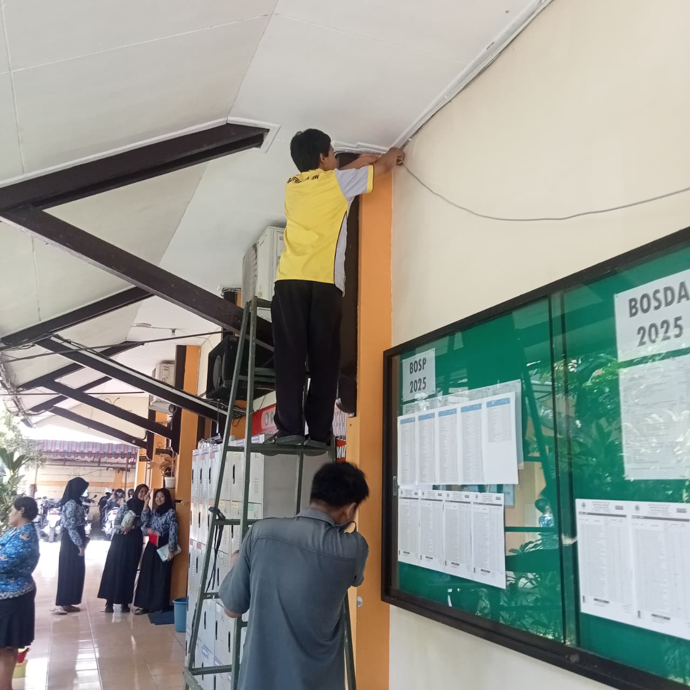
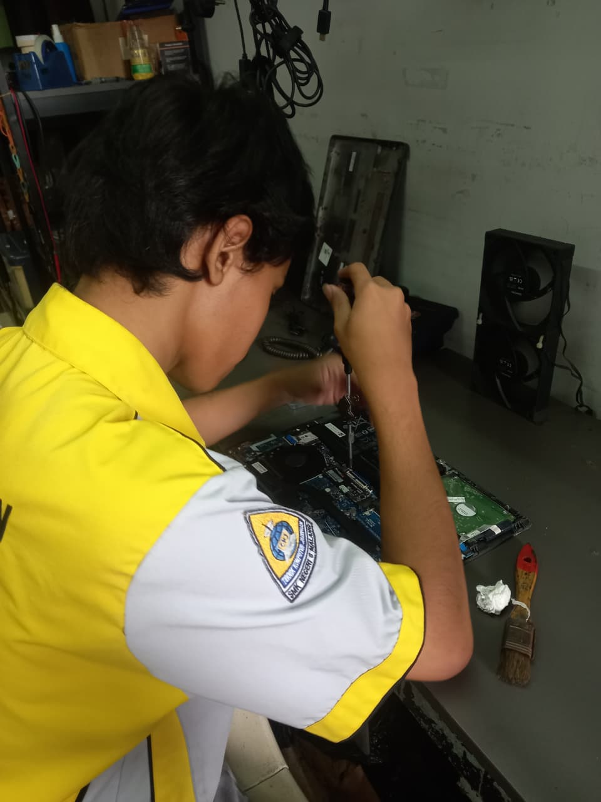
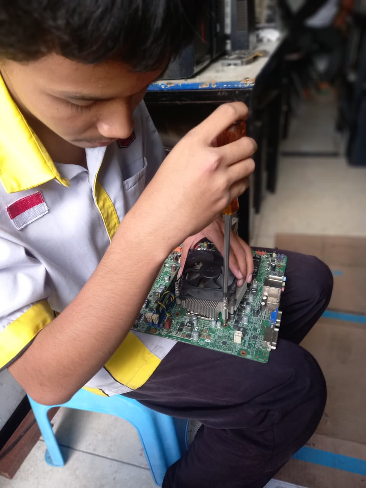
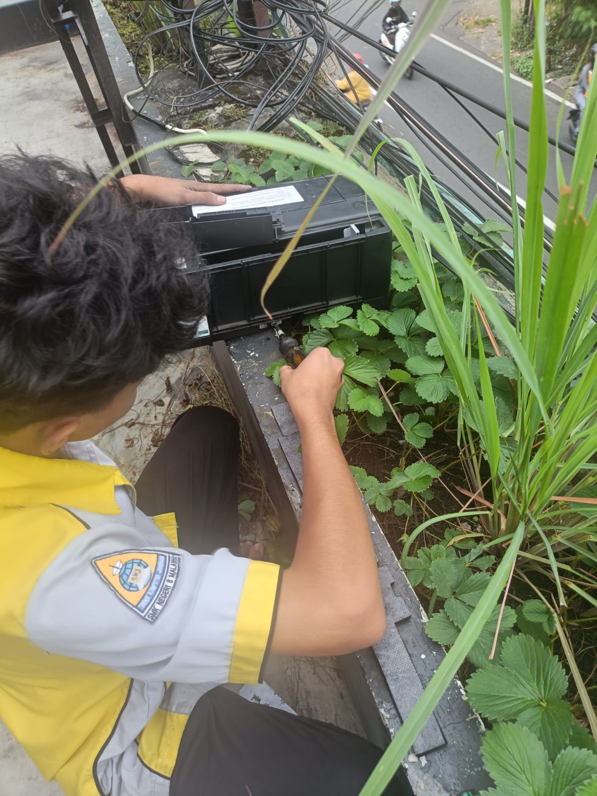
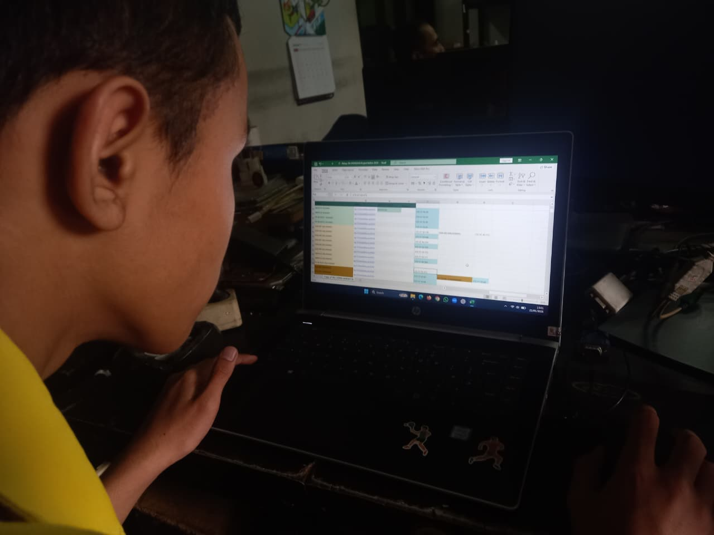
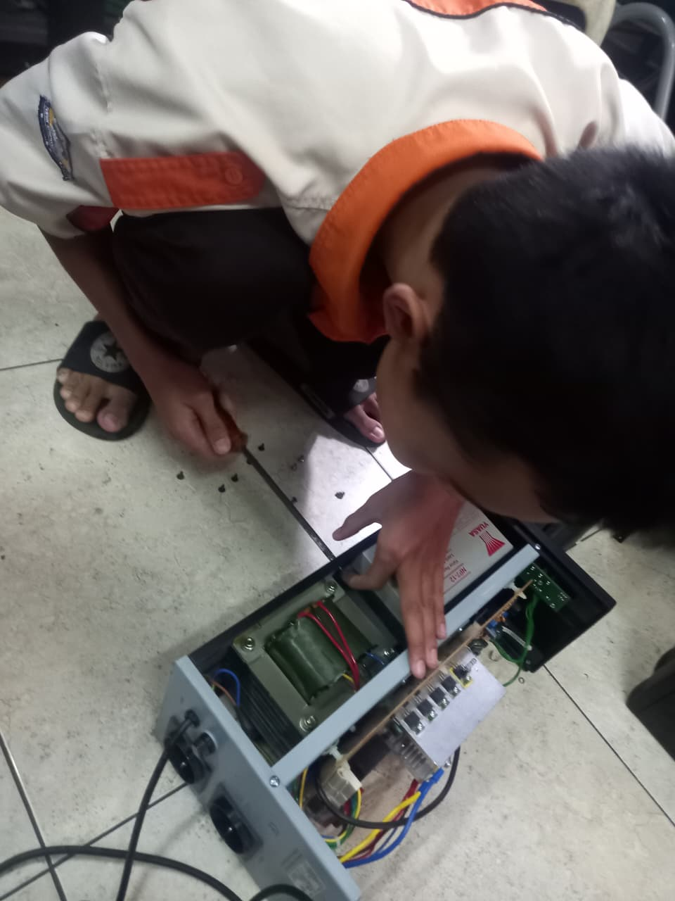

Website laporan Praktik Kerja Lapangan yang berisi profil IDUKA, latar belakang, biodata, pengalaman PKL, kompetensi, kesimpulan, dan galeri kegiatan.
CV Harco Center Computer menyediakan Service laptop,Service Printer dan Service PC. CV Harco Center Computer juga Menjual berbagai macam aksesoris komputer, seperti RAM, Hardisk, SSD, VGA Card, dll. CV Harco Center Computer berlokasi di Jl. Kaliurang No.38, Lowokwaru, Kec. Lowokwaru, Kota Malang, Jawa Timur 65141. CV Harco Center Computer Didirikan pada tahun 2005 dan telah Berdedikasi dalam Bidang Informasi Teknologi selama 18 Tahun.
Praktik Kerja Lapangan merupakan kegiatan pembelajaran yang bertujuan untuk memberikan pengalaman langsung kepada siswa dalam dunia kerja. Melalui kegiatan ini, siswa dapat menerapkan ilmu yang sudah dipelajari di sekolah, mengenal budaya kerja, meningkatkan kedisiplinan, serta memahami tanggung jawab dalam menyelesaikan tugas di lingkungan industri.
Kegiatan PKL juga membantu siswa mempersiapkan diri agar lebih siap menghadapi dunia kerja setelah lulus. Dengan mengikuti PKL, siswa tidak hanya belajar teori, tetapi juga mempraktikkan keterampilan secara nyata.
Saya adalah siswa SMK yang melaksanakan Praktik Kerja Lapangan untuk meningkatkan kemampuan, pengalaman, dan wawasan dalam dunia kerja. Selama PKL, saya belajar mengenai kedisiplinan, kerja sama, tanggung jawab, serta keterampilan sesuai bidang keahlian.
Mengenal struktur organisasi, aturan kerja, alat yang digunakan, dan tugas yang akan dilakukan selama PKL.
Mengerjakan tugas sesuai arahan pembimbing, seperti input data, desain, perakitan, instalasi, dokumentasi, atau pekerjaan teknis lainnya.
Mencatat kegiatan harian, membuat laporan, serta mengevaluasi hasil pekerjaan agar lebih baik.
Membiasakan diri datang tepat waktu, mengikuti aturan, dan menyelesaikan tugas sesuai jadwal.
Belajar bekerja dengan pembimbing, karyawan, dan teman dalam menyelesaikan pekerjaan.
Meningkatkan kemampuan sesuai jurusan, seperti komputer, jaringan, atau bidang lainnya.
Melatih cara berkomunikasi dengan sopan, jelas, dan sesuai situasi kerja.
Memahami pentingnya menyelesaikan pekerjaan dengan teliti dan tidak asal-asalan, karena dunia kerja bukan tempat main tebak-tebakan.
Belajar mencari solusi saat menghadapi masalah dalam pekerjaan.
Berdasarkan kegiatan PKL yang telah dilaksanakan, dapat disimpulkan bahwa Praktik Kerja Lapangan memberikan banyak manfaat bagi Saya. Kegiatan ini membantu Saya memahami dunia kerja secara langsung, meningkatkan keterampilan, membentuk sikap disiplin, serta menambah pengalaman yang berguna untuk masa depan.
Melalui PKL, Saya menjadi lebih siap menghadapi tantangan di dunia industri dan mampu menerapkan ilmu yang telah dipelajari di sekolah.





